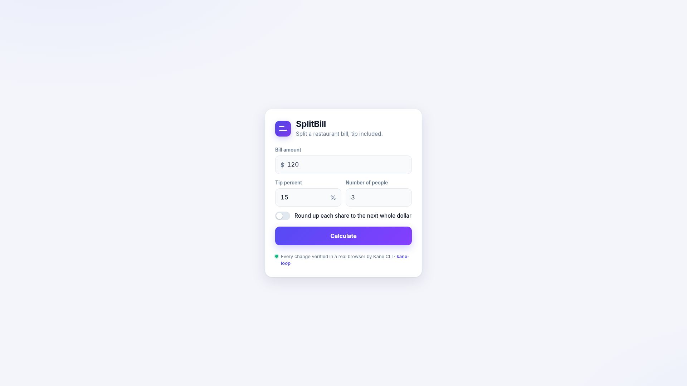

FAIL
split-three-ways
Go to http://localhost:4173, enter 120 in the Bill amount field, set Tip percent to 15, set Number of people to 3, click Calculate, then verify the page says Each person pays $46.00
Kane: The calculator accepts the entered bill, tip, and number of people, but clicking Calculate produces no payment result.
assertion_error.confirmed_product_bug
Failed at step 10: wait: Waiting after Calculate for the payment result
Browser console: n.toFixed is not a function
8 Kane steps
- navigate: Navigate to http://localhost:4173
- wait: queued plan (3 steps): type "Bill amount"; type "Tip percent"; type "Number of p
- type: Type "120" into "Bill amount"
- type: Type "15" into "Tip percent"
- type: Typing number of people 3
- click: Clicking Calculate button
- wait: PRIMARY: wait for the calculated payment result to appear
- wait: Waiting after Calculate for the payment result
